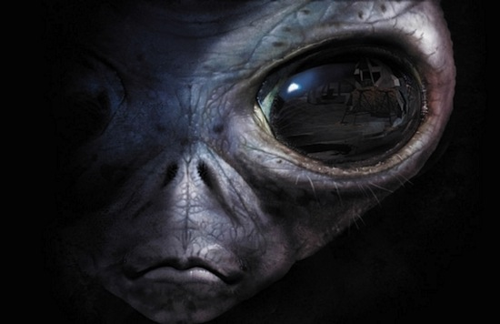

Ресторан "У конца Вселенной"
Дуглас Адамс
Есть теория, согласно которой в том случае, если кто-то точно выяснит, для чего и зачем появилась Вселенная, она тут же исчезнет, и ее заменит нечто другое, еще более бессмысленное и необъяснимое.
Есть другая теория, согласно которой это уже произошло.
 Глава 1
Глава 1
Началось это так:
В начале была создана Вселенная. Это у многих вызвало крайнее раздражение, и в основном рассматривалось как плохой ход.
Многие народы верят, что она была создана каким-нибудь божеством, хотя, к примеру, джадравартиды с Вильтводля VI верят в то, что на самом деле всю Вселенную вычихнуло существо по имени Большой Зеленый Арклохват.
Джатравартиды живут в постоянном страхе перед тем, что они называют Пришествием Большого Белого Платка. Это маленькие голубые создания, и у каждого из них пятьдесят рук, так что они ―единственный народ во всей Вселенной, который изобрел дезодорант раньше колеса.
Культ Большого Зеленого Арклохвата, однако, не получил большого распространения за пределами системы Вильтводля IV, и поэтому, а также потому, что Вселенная как была, так и остается полна загадок, поиск ответа не прекращается. Например, раса сверхразумных всеразмерных созданий построила себе однажды гигантский суперкомпьютер под названием Глубокомысленный, чтобы он раз и навсегда вычислить Ответ на Главный вопрос Жизни, Вселенной и всего Прочего.
Семь с половиной миллионов лет Глубокомысленный считал и рассчитывал, и, наконец, объявил, что нашел ответ: «Сорок два», ―и в результате пришлось строить еще один компьютер, еще больше, чтобы выяснить, какой же вопрос нужно задавать к этому ответу.
И этот компьютер, который назвали Землей, был так велик, что его часто принимали за планету ―особенно странные обезьяноподобные существа, бродившие по его корпусу, и даже не подозревавшие, что и они являются частью гигантского проекта.
А вот это как раз очень странно, потому что если не принимать в расчет это очевиднейшее обстоятельство, то невозможно понять, почему все, что происходило на Земле, на первый взгляд не имело ни малейшего смысла.
К сожалению, как перед завершающим аккордом ―выводом данных ―Земля была неожиданно разрушена вогенами для того, чтобы ―так они, по крайней мере, говорили ―освободить место для новой гиперпространственной дороги, так что все надежды на то, что смысл жизни будет наконец найден, рассеялись окончательно.
Так, во всяком случае, казалось.
Двое из этих странных обезьяноподобных существ выжили.
Артур Дент смылся в самый последний момент, потому что его старый друг, Форд Префект, неожиданно оказался с маленькой планеты где-то в окрестностях Бетельгейзе, а не из Гилдфорда, как он говорил до этого; и, что гораздо важнее для нашей истории, он знал, как путешествовать на попутных летающих тарелках.
Триция Макмиллан ―она же Триллиан ―скрылась с Земли на полгода раньше с Зафодом Библброксом, в то время Президентом Галактики.
Только двое.
Только они двое и остались от величайшего в истории эксперимента, целью которого было найти Главный Вопрос и Главный Ответ Жизни, Вселенной и Всего Такого.
И вот между их кораблем, что лениво плыл сквозь чернильную пустоту космоса, и кораблем вогенов, что гнался за ними, осталось меньше полумиллиона километров.
Глава 2
Как и все прочие вогенские корабли, этот корабль выглядел так, словно его не собрали на космической верфи, а наспех слепили в сарае на заднем дворе. Грязно-желтая броня покрывала все его отсеки, которые выпячивались из корпуса под самыми мерзкими углами, и это могло бы ухудшить внешний облик практически любого корабля; к данному случаю, это, впрочем, не относится. В небесах встречаются вещи еще отвратительнее, но это не подтверждено достоверными свидетельствами.
Вообще говоря, если уж вам хочется посмотреть на что-либо более мерзопакостное, чем корабль вогенов, войдите в него и посмотрите на них самих. Но если у вас достанет ума, именно этого вы постараетесь не делать, потому что нормальный воген не станет семь раз отмерять, прежде чем сделает с вами что-нибудь настолько ужасное, что вы подумаете: «И надо же мне было появиться на свет!», или (если еще не окончательно потеряли способность соображать): «И надо же было этому вогену появиться на свет!»
Впрочем, нормальный воген, возможно, и один раз не будет отмерять. Эти тупые, упрямые, угрюмые существа сначала делают, а потом думают, и последнее дается им с большим трудом. Изучение вогенской анатомии показывает, что изначально мозг вогена представлял собой жутко видоизменную, смещенную и страдающую коликами печень. Короче, самое лучшее, что можно о них сказать ―они знают, чего им надо, а это значит ―они всегда готовы сделать с кем-либо что-нибудь ужасное, и при малейшей возможности впасть в крайнее раздражение.
А вот чего им не надо, и, соответственно, чего они недолюбливают это оставлять работу недоделанной, особенно этот самый воген, и особенно ―по разным причинам ―эту работу. Этого вогена звали капитан Простетник Воген Джелц из Галактического Совета по Планированию Гиперпространства, и он был тем, кому поручили снос так называемой «планеты Земля».
Он поворочался в своем неудобном, покрытом слизью кресле, повернулся в нем всем своим монументально отвратительным телом, и уставился на дисплей. На дисплее светилось изображение корабля Золотое Сердце.
Простетнику Вогену Джелцу не было дела до того, что этот корабль, оснащенный двигателем бесконечной невероятности, был самым красивым в истории кораблем. Не было ему дела и до того, что создание этого двигателя было революцией в космическом кораблестроении. Соображения эстетики или технологической новизны были для него закрытой книгой; дай ему волю, и они стали бы закрытой, сожженной и глубоко закопанной книгой.
Еще меньше для него значило, что на борту Золотого Сердца был Зафод Библброкс ―бывший Президент Галактики. Что с того, что за ним и за украденным им кораблем охотилась вся полиция Галактики ―вогену на это было глубоко наплевать.
От Золотого Сердца ему нужно было совсем другое.
Как уже говорилось, вогенам не чуждо взяточничество и коррупция ―так же, как, скажем, морю не чужды волны. В полной мере это относится и к Простетнику Вогену Джелцу. Когда он слышал слова «расовое равенство» или «высокая мораль», он раздраженно сопел и доставал с полки словарь, и когда он слышал звон монет, особенно большого количества монет, он раздраженно сопел, доставал с полки свод законов и выбрасывал его в окно.
Так неуклонно добиваясь полного разрушения Земли и всего, что на ней находилось, он несколько превышал свои профессиональные обязанности. Были даже определенные сомнения по поводу того, действительно ли собирались строить ту гиперпространственную ветку. Дело, правда, замяли.
Воген удовлетворенно хмыкнул.
―Компьютер, ―прохрипел он, ―соедини меня с моим личным мозгопатологом.
Через несколько секунд на экране появилось лицо Гэга Хэлфрунта. Оно сияло улыбкой, типичной для лица человека, который знал, что между его лицом и лицом его собеседника-вогена ―десять световых лет. Кроме того, к улыбке было подмешано еще чуть-чуть иронии. Хотя воген всегда говорил о Хэлфрунте как о «личном мозгопатологе», но чего нет ―так уж нет, в данном случае медицине было просто не с чем работать, и на самом деле не воген платил Хэлфрунту за консультации, а наоборот, Хэлфрунт платил вогену кучу денег за разного рода самую грязную работу. Будучи одним из самых выдающихся и преуспевающих психиатров Галактики, он (а также другие психиатры его круга) готов был платить кучу денег, когда на карту, похоже, было поставлено все будущее психиатрической науки.
―Ну что же, ―сказал он, ―здравствуйте, дорогой капитан. Как мы себя чувствуем?
В разговоре с вогеном он позволял себе пренебречь своим приобретенным в результате долгой тренировки венским акцентом.
Воген рассказал ему, что за последние несколько часов он почти наполовину сократил численность живых членов команды в порядке дисциплинарного взыскания.
Хэлфрунт ни на мгновение не перестал улыбаться.
―Ну и что? Вы знаете, мне кажется, это самое естественное поведение для вогена. Дать естественный и здоровый выход агрессивным наклонностям в актах бессмысленного насилия.
―Вы всегда так говорите, ―буркнул воген.
―Ну и что? ―повторил Хэлфрунт. ―Мне кажется, это самое естественное поведение для психиатра. Отлично. Очевидно, мы оба сегодня в прекрасной умственной форме. А теперь скажите мне, что нового в нашем деле?
―Мы засекли корабль.
―Чудесно, ―сказал Хэлфрунт, ―просто чудесно! А экипаж?
―Землянин там.
―Великолепно! А…
―Самка с той же планеты. Они последние.
―Отлично, ―Хэлфрунт сиял. ―Кто еще?
―Этот… Префект.
―Ну и?
―И Зафод Библброкс.
Хэлфрунт на мгновение перестал улыбаться.
―А, конечно, ―сказал он. ―Так я и думал. Увы, это очень печально.
―Близкий друг? ―осведомился воген, который где-то подцепил это выражение, и теперь решил ввернуть его в разговор.
―Да нет, ―ответил Хэлфрунт, ―при том, чем я занимаюсь, я не завожу близких друзей.
―А, ―хрюкнул воген, ―профессиональное отстранение.
―Нет, ―весело пояснил Хэлфрунт, ―просто не умею.
Он помолчал. Хотя губы его продолжали улыбаться, в глазах появилась озабоченность.
―Просто Библброкс, понимаете ли, один из моих самых выгодных пациентов. У него такие проблемы с психикой, что можно только мечтать.
Он еще поигрался с этой мыслью, прежде чем позволить ей удалиться.
―И все же, ―сказал он, ―вы готовы выполнить задание?
―Да.
―Отлично. Немедленно уничтожить корабль.
―А Библброкс?
―Ну, ―сказал Хэлфрунт, ―что ж ―Библброкс…
И исчез с экрана.
Капитан Воген Простетник Джелц нажал кнопку селектора и обратился к остаткам команды.
―Атака, ―сказал он.
В этот самый момент Зафод Библброкс страшно ругался в своей каюте. Два часа назад он заявил, что они быстренько заскочат перекусить в ресторан «Конец Вселенной», по поводу чего разругался с компьютером в пух и прах, и бросился в свою каюту, изрыгая проклятия и вопя, что рассчитает показатели невероятности столбиком.
Благодаря своему невероятностному двигателю корабль Золотое Сердце был самым мощным и самым непредсказуемым кораблем в истории. Не было ничего такого, чего бы он не мог сделать, при единственном условии ―если вы абсолютно точно знали, насколько именно невероятно то, чего вы пожелали.
Зафод украл его, присутствуя на церемонии запуска в качества Президента Галактики. Он не знал зачем. Единственной причиной было то, что корабль ему понравился. Он не знал также, зачем он стал Президентом Галактики, кроме того, что, как ему казалось, в качестве Президента он будет вести легкую и приятную жизнь.
Он точно знал, что есть и другие, более важные причины, но они были надежно похоронены в темных замкнутых отделах двух его мозгов. Ему бы очень хотелось, чтобы эти темные замкнутые отделы двух его мозгов исчезли, потому что иногда они вдруг раскрывались, и оттуда на свет появлялись странные мысли, шебуршились у него в мозгах и пытались отвлечь его от того, что он считал главным своим занятием ―то есть от легкой и приятной жизни.
В настоящий момент его жизнь не была ни легкой, ни приятной. Его терпение кончилось, и бумага тоже. К тому же он страшно проголодался.
―Чтоб тебя в черную дыру затянуло! ―завопил он.
Именно в этот самый момент Форд Префект висел в воздухе. Виной тому была не неполадка в системе искусственной гравитации, но то, что он спускался по лифт-тоннелю из рубки к каютам экипажа корабля. Падать приходилось достаточно долго. Форд неловко приземлился, споткнулся, чуть не упал, бросился по коридору к каютам, ―из-под ног у него вспорхнула стайка минироботов-уборщиков ―на полном ходу с трудом свернул за угол, без стука ворвался к Зафоду, и, наконец, сообщил, что у него на уме.
―Вогены, ―сказал он.
Незадолго до этого Артур Дент покинул свою каюту и отправился на поиски чая. В сей доблестный поход наш герой пустился без особой надежды на успех, ибо знал, что единственным источником горячих напитков на корабле было варварское устройство, нареченное своим создателем ―корпорацией Сириус Кибернетикс ―Питальником-Жаждоутолителем. И в прежних своих скитаниях Артуру приходилось сталкиваться с ним.
Питальник-Жаждоутолитель утверждал, что предоставляет максимально широкий выбор напитков на любой вкус и обмен веществ для любого существа, которому вздумается использовать его по назначению. Однако при испытаниях он неизменно выдавал пластиковую чашку, полную жидкости, которая почти, но не совсем, абсолютно не походила на чай.
Артур попытался что-то доказать жаждоутолителю.
―Чай, ―сказал он.
―Поделись и Насладись, ―ответил автомат и снабдил его очередной чашкой тошнотворной жидкости.
Артур вылил ее в раковину.
―Поделись и Насладись, ―повторил автомат, и выдал еще одну чашку.
«Поделись и Насладись» ―это девиз Отдела рекламаций корпорации Сириус Кибернетикс, который благодаря своим деловым успехам разросся так, что теперь занимает большую часть суши трех среднего размера планет, и который является единственным отделом корпорации, приносящим ощутимый доход.
Вы можете увидеть ―точнее, могли увидеть ―этот девиз, составленный из неоновых букв высотой в три мили, возле космопорта Отдела рекламаций на Эадраксе. К сожалению, эти буквы оказались настолько тяжелы, что вскоре после того, как их установили, грунт под ними провалился, и они примерно наполовину погрузились под землю, разрушив при этом кабинеты многих молодых и талантливых инспекторов по рекламациям ―ныне покойных.
Выступающие над землей половины букв на местном языке образуют надпись «А не пойти ли тебе подальше?..», и больше не светятся, за исключением особо крупных празднеств.
Артур вылил шестую чашку жидкости.
―Слушай, машина, ―сказал он, ―ты говоришь, что можешь синтезировать абсолютно любой напиток, так чего же ты подсовываешь мне одно и то же тошнотворное пойло?
―Данные об обмене веществ и оптимальном вкусоощущении, ―забурлил жаждоутолитель. ―Поделись и Насладись.
―Да у него отвратительный вкус!
―Если вам понравился вкус этого напитка, ―продолжал автомат, ―почему бы не поделиться им с вашими друзьями?
―Потому что я не хочу их потерять, ―язвительно ответил Артур. ―Попытайся понять то, что я тебе говорю. Этот напиток…
―Этот напиток, ―мягко продолжал жаждоутолитель, ―был создан специально, чтобы удовлетворить вашим индивидуальным запросам и потребностям, как по вкусу, так и по питательности.
―А, ―сказал Артур, ―так я, значит, мазохист на диете?
―Поделись и Насладись.
―Да заткнись ты!
―Это все?
Артур решил отказаться от своего благого намерения.
―Да, ―сказал он.
Потом он решил: какого черта я должен от него отказываться?
―Нет, ―сказал он, ―послушай, это же так просто… все, что мне надо ―это чашка чаю. А ты мне ее сделаешь. Молчи и слушай.
И он уселся перед жаждоутолителем. Он рассказал ему об Индии, он рассказал ему о Китае, рассказал о Цейлоне. Он рассказал ему о широких листьях, высушенных на солнце. Он рассказал о серебряных заварочных чайниках. Он рассказал о чаепитиях на лужайке летним вечером. Он рассказал жаждоутолителю о том, что сначала надо наливать в чашку молоко, и уже потом чай, чтобы молоко не свернулось, и даже изложил (правда, очень коротко) историю Ост-Индской Компании.
―Вот оно что, ―сказал жаждоутолитель, когда Артур замолчал.
―Да, ―сказал Артур, ―вот чего я хочу.
―Вам нужен вкус сухих листьев, обданных кипятком?
―Ну… да. С молоком.
―Выжатым из коровы?
―Ну, я бы сказал по-другому…
―Мне понадобится помощь, ―вдруг деловито заявил автомат. Из его голоса исчезло жизнерадостное бульканье, зато появилась решительность.
―Помогу, чем смогу, ―сказал Артур.
―Вы уже помогли, ―сообщил ему жаждоутолитель.
Он вызвал главный корабельный компьютер.
―Всем привет! ―первым делом заявил главный компьютер.
Жаждоутолитель объяснил, что от него требуется, главному компьютеру. Тот подумал, объединил все свои логические цепи с системами жаждоутолителя, и они вместе погрузились в мрачное молчание.
Артур посидел немного, подождал, но больше ничего не случилось.
Он пнул жаждоутолитель ногой, и все равно ничего не случилось.
В конце концов он сдался, и поднялся обратно в рубку.
В пустынных глубинах космоса замер корабль Золотое Сердце. Вокруг него яркими точечками сверкала Галактика. К нему медленно подбирался отвратительный желтый вогенский крейсер.
Артур посмотрел. Внизу, среди лежащих и сидящих свежеразмороженных пассажиров двигалось перемазанное создание ―возможно, «шаталось» будет более верным словом. Оно что-то несло в руках. Шатаясь, оно размахивало этим чем-то так, словно было мертвецки пьяно. Через некоторое время оно бросило свое занятие и свалилось без сил.
Артур не понял, зачем Форду понадобилось указывать на него.
―Камера, ―сказал Форд. ―Он снимает исторический момент.
―Ладно, ―сказал он через минуту. ―Я отключаюсь.
Некоторое время он сидел молча.
Еще через некоторое время Артур подумал, что неплохо бы узнать, что это должно значить.
―Форд, когда ты говоришь, что отключаешься, что именно ты имеешь в виду? ―спросил он.
―Хороший вопрос, ―сказал Форд. ―Это значит, что мне нужна полная тишина.
Глядя ему через плечо, Артур увидел, что он колдует над маленьким черным прибором. Форд уже объяснял Артуру, что такое суб-эфирный ощущатель, но Артур тогда просто кивнул головой, не обратил на это внимания, и благополучно забыл все объяснения. Для него Вселенная все еще делилась на две части ―Землю и все остальное. Поскольку Земля была снесена для постройки гиперпространственной ветки, его мировоззение отличалось некоторой однобокостью, но Артур предпочитал однобокое мировоззрение окончательной потере связи со своей родной планетой. Суб-эфирный ощущатель, несомненно, относился к категории «всего остального».
―Пусто, как в бутылке из-под виски наутро после попойки, ―сказал Форд, тряся ощущатель.
Виски, подумал Артур, бездумно глядя на первобытный пейзаж вокруг, чего бы я сейчас не отдал за одну бутылку хорошего земного виски.
―Это ж надо, ―горестно проговорил Форд, ―ни одного сигнала на несколько световых лет вокруг этой несчастной бородавки! Ты меня слышишь?
―Что? ―спросил Артур.
―Мы попали в беду, ―объяснил Форд.
―Да? ―не удивился Артур. Эта новость несколько устарела, подумал он.
―Пока ощущатель чего-нибудь не поймает, ―сказал Форд, ―наши шансы покинуть эту планету равны нулю. Конечно, может быть, что какой-нибудь урод поставил магнитное поле вокруг планеты, чтобы отражать радиоволны что значит, что нам нужно просто пойти и поискать в нем дыру, где прием возможен. Пошли?
Он поднял сумку, и направился к горизонту.
Артур посмотрел вниз. Оператор снова поднялся на ноги, и как раз успел поймать в кадр, как его коллега свалился без сил.
Артур сорвал травинку, и пошел за Фордом.